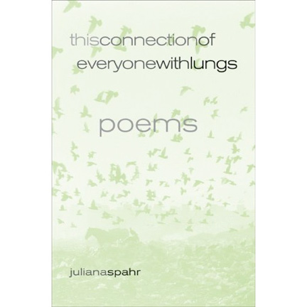
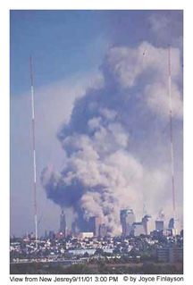
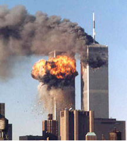

Christopher Arigo
Notes Toward an Ecopoetics: Revising the Postmodern Sublime and Juliana Spahr’s This Connection of Everyone with Lungs
This paper is divided into two very distinct parts: theory and practice. The first section is an attempt to work toward a definition of what exactly ecopoetics means, what it means as a practice, to attempt to answer the question: what does an ecopoem look like? This section, however, is just a beginning, not the final word. It also attempts to trace some common themes that occur in ecopoems and how they manifest conceptually and linguistically.
The second section teeters on the brink, in the ecotone, between ecocriticism and ecopoetics—a space that they must necessarily share—in which I look specifically at Juliana Spahr’s poetry collection This Connection of Everyone with Lungs.
Preface: Notes toward a definition of ecopoetics
The word ecology, fairly young in the English language, was coined by the German zoologist Ernst Haeckel as Ökologie from the Greek oikos meaning a house, a dwelling place, a habitation in 1873, almost exactly a century before the birth of a new discipline: ecocriticism, which “explores the ways in which we imagine and portray the relationship between humans and the environment in all areas of cultural production…” (Garrard i). The origins of ecocriticism coincides interestingly with ethnopoetics, which Jerome Rothenberg describes as looking “away from the modern & experimental, to focus on ancient & autochthonous cultures (often under threat of mass extinction or long since blown away) - is the product (as study & praxis) of our most dedicated & outrageous modernism, even surviving (under fire) into that postmodernism taken as the older movement's early & forever problematic offspring.” Ethnopoetics must necessarily be included in a complete ecopoetics, as humans are an integral part of the ecology.
Jonathan Skinner, the editor of the journal ecopoetics, says:
“Eco” here signals—no more, no less—the house we share with several million other species, our planet Earth. “Poetics” is used as poesis or making, not necessarily to emphasize the critical over the creative act (nor vice versa). Thus: ecopoetics, a house making (Skinner 5).
In the frontmatter for each issue of ecopoetics, he also says that the journal is “dedicated to exploring creative-critical edges between writing (with an emphasis on poetry) and ecology (the theory and praxis of deliberate earthlings).” In a sense, ecopoetics is an ecotone between these disciplines, between ecology, poetry, and ethnopoetics; ecopoetics addresses itself to the concerns of “the theory and praxis of deliberate earthlings.”
An ecotone is a biological term used to describe the area between adjacent ecosystems, which often creates an “edge effect,” that is, the actual boundary between different habitats. So, in a sense, an ecotone exists between the edges of ecosystems—it is on the edge, just as ecopoetics is on the edge of numerous disciplines—and hopefully on the cutting edge of poetic innovation and ecological thinking. The word ecotone is derived from the Greek from the word tonos meaning tension. So literally an ecotone is a place where ecologies are in tension. In much the same way, ecopoetics is in tension with the numerous disciplines that surround it—by necessity, the ecopoet is an interdisciplinary creature, whose purview includes science and the arts, though neither are mutually exclusive.
A good ecopoem then is a house made founded on the tension between the cutting edge of innovation and ecological thinking.
The Revised Sublime: Ecopoetry, Politics, Apocalypse
Ecopoetics does not necessarily mean nature poetry. In fact, “traditional Nature poetry, a la the human-subject meditating upon a natural object-landscape-animal as a doorway into meaning of the human subject’s life, is now highly problematic” (Durand 59). In fact, much of the ecopoetry being written seems to take place more in the realm of the innovative, as opposed to more mainstream poetries. Perhaps this is because innovative poetries are loci of resistance to mainstream poetic practices (and values) which presumably reflect larger social paradigms. Thus innovative practices and ecological thinking/being/feeling combine to produce a site of resistance, of politics, of political resistance. Perhaps, given the postmodern world in which we live, a world in which we are fully aware of the interdependence of the body upon its world for its health, a world that is now inextricable from the body, an ecopoetics is an inevitable outcome or byproduct: perhaps poetry as a practice is the best means of directly addressing an environment in crisis. And perhaps this is why it is so difficult to pin down what makes a poem or poet “eco”—because the concern insinuates itself into so many elements of the writing, between the lines, in the white spaces, questioning even the paper upon which the poem is printed (if indeed it is actually printed): the paper industry is one of the country’s largest polluters after all. Or maybe it is because the poem itself is an ecology: a microcosmic ecosystem in which itself dwells.
If ecopoetry is not necessarily Nature poetry, then what is it? Most often, nature manifests itself in the work indirectly—often in the shape of a dominant worldview in the work. In Juliana Spahr’s work, the concept of the interconnectedness of individual via breath is a very ecological perception (more on this later). To bring up her idea again that “nature poetry was the most immoral of poetries because it showed the bird, often a bird like themselves that had arrived from afar and not the bulldozer” (“Anti-Colonial Poetry” 1). On one hand, she is talking about ecological and sociopolitical colonization,1 while on the other, she intimates at a concept that seems central to the discussion: the postmodern sublime. I do not want to dive too deeply into the vertiginous deep that is often called the Romantic sublime: much has been written about this already, but a quick definition is in order:
In its psychologized, eighteenth-century form, the sublime is an aesthetic category well suited to address paradoxical, transgressive experiences of pleasurable pain—experiences that seem to refer back to the fundamental in adequation between a representation and what it seeks to represent…one’s pleasure in the sublime derives from the fact that, while gazing on the dizzying abyss from behind the guard rail, one is still happily alive and not really in danger at all (Redfield 852).
However, in the post WWII world, things have changed. Redfield sums up Lyotard’s idea2 nicely when he talks about “the kind of aesthetic pleasure obtainable from representations of the overwhelming complexity of postwar technology. Images of ‘some immense communicational or computer network,’ as Fredric Jameson puts it, replace the alps and canyons of eighteenth century aesthetics, while a decentering sense of the endless flow of simulacra substitutes for an intuition of the annihilating power of the natural world” (ibid.).3
Redfield’s definitions, despite their accuracy and succinctness, pose a problem for the contemporary ecopoet. While the contemporary poet may be insistently aware of “endless flow of simulacra,” what happens when that poet enters the natural world? There are a couple of problems at work here: the first is that in Lyotard’s term, the whole world has been reduced to simulacra. This is problematic outside of the context of developed nations. In order to be exposed to this simulacra, one must be exposed to its harbinger: technology, the god of the developed world. Certainly, many national parks and their environs have been disneyfied, but there are still areas in which technology has not intruded, in both developed and developing nations.4
There is a problem emerging already: the dichotomy of city/technology, nature/natural is being set up, which implies that the two are not connected. Therefore, one is not susceptible to the problems of the other, that ecosystems, whether urban or rural, are discreet elements that function independently. Ecopoetics must not be seen as a return “back to nature,” but rather as a reminder that we never left, that the bulldozers and the birds are part of the ecology, to paraphrase Spahr. The contemporary ecopoem does not merely reference “nature” or the “natural world”—the contemporary ecopoet is far too savvy, far too aware for such simplistic reductionism. The contemporary ecopoem is self-aware of itself as a construct, and of the larger role of the poet/poem/poetics in the context of the larger ecosystem of literature and the outside world. In order to reposition the postmodern sublime into the context of inter-related, ecological thinking, I turn to the writer and activist Rebecca Solnit. In her stunning book Savage Dreams: A Journey into the Landscape Wars of the American West, she posits the interpretation of the postmodern sublime5 as
a category distinct from beauty: the sublime as the aesthetic of vastness, magnificence, power, and fear….politics has invaded the landscape…the landscape is now a victim of history…history is not only the history of human actions, of causes, but the history of effects, of ecological damage. Thus, we see not the soldiers bombing the landscape—action pictures—but the landscape shattered by bombs….Our morality is complicated by the fact that the sky above even the most demonic folly is often exquisitely colored, and its clouds as breathtakingly pure (47).
Thus, the sublime as it can now be experienced is often an awesome spectacle, not of the tranquility and overwhelming beauty of a natural scene solely, but the tension between the tranquility and beauty as juxtaposed with human intervention in the landscape, often in its most destructive forms—and there is a correlation: the more devastating the destruction and the more beautiful a landscape is, the deeper the feeling of the Revised Sublime.
The implications of what I will call the Revised Sublime in order to distinguish it from Lyotard’s idea are vast. There is virtually no landscape, no ecosystem on this planet that has been untouched by human intervention, by technology and its byproducts. So the possibility of writing a Nature poem that ignores Spahr’s metaphoric bulldozer is virtually impossible.
In the Revised Sublime, those sympathetic to ecological issues have their morality further “complicated” by the fact that they understand on a more resonant scale the implications of the ecological disturbances. I mean this not as a statement of elitism, but rather as a statement of awareness: those who are aware of and think about ecological repercussions, will, in a sense, feel the impact of the disturbed landscape more deeply than the average tourist or gawker. The poet is then faced with a slippery slope: at this point the landscape has in fact been invaded by politics: it is an unfortunate and inescapable fact that environmental degradation is the byproduct of politics. As a result, the poem itself must become a political construct as well.
Ecocriticism, the sibling of ecopoetics, is a necessarily political undertaking, given its coziness with modes of analysis like feminism and Marxism. It seems then that it is no coincidence that much ecopoetry has an undercurrent of politicized discourse running through it. Perhaps this is because by virtue of its subjects, ecopoetry spirals out from itself, away from the poet, encompassing the larger world. Politization of ecopoetry is the byproduct of ecological devastation, which produces its own byproduct: ecopoetry. In order to have an ecopoetics, there must be an agent: the ecopoet, one, who according to Skinner’s idea, must be a house-maker, a maker of ecologies, both internal and external, and most importantly, wild. Thoreau reminds us that “all good things are wild and free,” so the poet rooted in his or her ecologies remains.
As mentioned earlier, a good poem is a poem under tension: a tension located at the intersection of human interference and destruction and the beauty of nature: the Revised Sublime. Solnit states that the eighteenth-century sublime
came from natural phenomena or artistic representations of natural phenomena; the unnatural disasters of the present offer no such containment within the bounds of the natural—the oil fields afire in Kuwait, the mushroom clouds above Yucca Flat, the blood-red sunsets of Los Angeles—though they still compel attention. The atomic bomb…is both the principle metaphor and fact of the problematic relationship between our power, desire, and limits” (46).
It is nearly impossible not to be awed by such displays, but at what cost? Can ecopoetics then be a site of reclamation of our lost connection with the natural world? Or is it the result of the severed/interrupted connections?
I think it is worth stating outright that the ecopoem has the potential for reshaping thinking about ecological issues. The problem, however, which is at the root of all innovative practices, is that of accessibility and exposure. Ecopoetry is no panacea. Most often, it is read mostly by others sympathetic not only to experimentation in poetics, but those who are left-leaning politically, and who are perhaps at least superficially aware of ecological issues (“I recycle”). Idealistically, I’d like to say that ecopoetry is the key: it occupies this tensioned space, thus it reveals the problems of destroying the natural world. However, its contribution will always be small, but ecologically, perhaps its effects will be felt in the most unlikely of places. This, of course, is the optimistic view.
The above is a much abbreviated gesture towards outlining some of the many concepts that I have been thinking about recently. My intention is to create some kind of theoretical framework, some attempt at a definition of what exactly ecopoetics is—because I feel that people like Jonathan Skinner, whose work and thinking I admire a great deal, just simply have not done what I feel is the necessary framing. My goal is not to write a manifesto, but rather to produce a manifest of some major points and problems with ecopoetics. Ecocritics have very thoroughly articulated their position, and have successfully moved beyond the obvious scholarly analyses of Thoreau and Jeffers, to include more contemporary work. It is now time for ecopoetics to do the same.
Ecopoetics: Juliana Spahr’s Ecological Connectivity
In order to further elucidate and to test some of the concepts I introduce above, I want to turn to the work of Juliana Spahr, particularly her collection This Connection of Everyone with Lungs. Just beginning with the cover, the reader is faced with an interesting quandary: at first, the faded-out green seems to depict a flock of birds flying across an empty plain of sky, juxtaposed against the title and the word “poems.”

Then the eyes move down to the silhouettes of a horse and numerous vultures and suddenly one realizes that this is a photograph (altered) of a garbage dump with the hazy backdrop of a skyline. On the back cover flap, the notes say that this is a photo of “Sebastião Salgado, garbage dump in São Paulo, Brazil.” The choice of this photo is interesting on several levels. I will assume that the decision about the cover art was the result of a discussion/negotiation between the poet and publisher, thus making it a mutual decision, not solely based on marketing, but rather as one that also encompasses what the author (and publisher) feel is a “suitable” cover design i.e. one that captures in some way (thematic, etc.) central concerns in the collection.
This photo demonstrates nicely the notion of a minor form of the postmodern sublime, that is, the incursion of large-scale human activity on an ecosystem, represented in the photo, by the flock of birds. Garbage, of course, is the most obvious symbol of human civilization and is simultaneously a critique of that civilization (see A.R. Ammons’ “epic” poem/book Garbage). One of the side effects of this much waste is of course the omnipresent flocks of birds, scavengers and otherwise, which ecologically speaking may not be such a negative consequence, but the photo also seems to gesture towards the clash of human encroachment and the natural world. Keeping this in mind, before even opening the book, the title then takes on a rather imperative insistence, the main assertion being, that everyone with lungs is connected, everyone breathes the same air, and based on the juxtaposition with the cover title, this air is polluted. Is part of the connection an accusation that we all pollute?
The book is then divided into two parts based on chronology and centering around the events of September 11th: Poem Written after September 11, 2001 and Poem Written from November 30, 2002, to March 27, 2003. This set up immediately politicizes what follows. Not only is everyone connected by the air breathed, but they are also connected by this tragic event. The book opens with a very imperative assertion:
There are these things:
cells, the movement of cells and the division of cells
and then the general beating of circulation
and hands, and body, and feet
and skin that surrounds hands, body, feet (3).
This is a book, as we would expect from the title, rooted deeply in the body. Here biology is the imperative, the foundation upon which the rest of the book is built. Outside of the body, Spahr tells us, is space surrounding everything, that “goes in and out of everyone’s bodies” (4). This is the climax of the poem that then leads into the building chant-like repetition of what I consider the heart of this collection: the breath, the breathing of space. As the “chant” builds, it moves from the level of individuals—“Everyone with lungs breathes the space in and out as everyone / with lungs breathes the space between the hands in and out” (ibid.).—to its peak:
as everyone with lungs breathes the space between the hands
and the space around the hands and the space of the room and
the space of the building that surrounds the room and the space
of the neighborhoods nearby and the space of the cities and the
spaces of the regions and the space of the nations and the space
of the continents and islands and the space of the oceans and
the space of the troposphere and the space of the stratosphere
and the space of the mesosphere in and out (8).
With some difficulty, one can read this passage in a single breath, and since the subject of the piece is breath itself, it would seem like a fair estimation that this is in fact how it is meant to be read. If that’s the case, this passage leaves the reader breathless at the conclusion of the chant, as if the scale of events and connections is too much to bear, too large to be contained or explained by mere words.
Following this passage there is a pause, a page break, but then the breathless rhythm builds again, this time on the subject of entering space and connection, which leads to the concluding statement: “How lovely and how doomed this connection of everyone with lungs” (10). Indeed, there is a sense of doom that necessarily pervades this work: its foundation is disaster:
 |
 |
As Spahr reminds us: everyone breathes the “minute silicon particles from pulverized glass and concrete” (ibid.). It is very difficult to talk about 9/11 without the images, and for the sake of this discussion it seems worthwhile to mention that many of the pictures of the Twin Towers are portrayed against the beautiful, crisp early autumn blue sky. As Solnit says, “[o]ur morality is complicated by the fact that the sky above even the most demonic folly is often exquisitely colored, and its clouds as breathtakingly pure.”
Spahr talks about and alludes to the idea of intimacy a great deal in this book—the intimacy of course born from interconnectedness. Much of the speaker’s sense of connection or intimacy comes from a sense of place, namely Hawai’i. Spahr introduces the second part of the book with a “note” in which she explores politics and the shift in thinking that resulted from 9/11. She talks about how Hawai’i’s physical dislocation from the continental US “felt suddenly unhelpful” and that “I felt I had to think about what I was connected with, and what I was complicit with….I had to think about my intimacy with things I would rather not be intimate with” (13). September 11th very much inscribed itself upon the landscape, both physically at Ground Zero and the larger landscape of the global psyche. This disaster even insinuates itself into the natural world: “When I speak of parrots I speak of all that we wake to this / morning, the Dow slipping…” and a litany of other sociopolitical current events (15). I mentioned earlier that one characteristic of the ecopoem is its virtually unavoidable connection with sociopolitical realities: ecological problems are the result of sociopolitical problems and vice versa.
Following this revelation, the speaker—very literalized here—begins an anaphoric litany of sections in which she declares “I speak…” or “When I speak…” Her statements of sociopolitics are interspersed over and over again against a backdrop of naturalistic images. On page 17, she offers a list of plants very much in the spirit of Gary Snyder’s ecological “inventories”, always keeping in mind their ecological reality:
I speak of how they begin their day at sunrise and fly at treetop
height southward to rest in the trees near our bed, beloveds, where
they rest for about an hour to feed, preen, and socialize before
moving on to search for fruits and seed of wild plum, Christmas
berry, papaya, strawberry guava, and other shrubs and trees that
were, like them, like us, brought here from somewhere else.
The acuity of this notion—that so many species considered beautiful, species that are perhaps omnipresent in a landscape are often invasive and/or foreign species, just as the speaker realizes that she in fact is not native to Hawai’i. This is a theme she also picks up in her essay “What Anti-Colonial Poetry Has to Say about Language and Why It Matters.” She says:
All around them were reminders of what they were and of their impact. They lived among plants that grew into each other in various and unique ways. there was the huehue haole, or the passion flower vine, which smothered shrubs, small trees and the ground layer. Seeds from its fruit were dispersed by alien frugivorous birds. The koa haole which formed dense thickets and excluded all other plants…
and later “[t]hey began in this place with new patterns of relating. there were new patterns of their relationship and the new patterns the history of the place left on their relationships with others. They felt stroked by the weather that was unusually pleasant. But they felt lost otherwise.” Spahr uses basic ecology to talk about her position as an invasive species (read: colonizer). Her presence in Hawai’i, much like the presence of the huehue haole, is not welcome, and possibly detrimental. This is a landscape altered irreversibly. The native ecology has been disrupted (on all levels) and can never return to its unblemished state.
Spahr’s demonstration of the Revised Sublime becomes readily apparent in later sections in the book. The bird and bulldozer mentioned earlier makes its guest appearance on page 66:
When we spoke of birds and their bowers and their habits of nest
we also spoke of the Israeli military bulldozer that ran over Rachel
Corrie, the mysterious flu that appeared in Hong Kong and had
spread by morning to other parts of Asia, Elizabeth Smart’s return,
and Zoran Djingjic’s death.
Once again, Spahr demonstrates the elaborate interconnectedness of the world in which we live: in one breath she is talking about Bower birds and the next Israel and various other global issues and woes. As Solnit stated, politics has invaded the landscape—it is inescapable for an aware and educated person. The poem progresses and begins to become more of a traditional nature poem interjected by a “climate report” (“the waves were a gentle one to three feet”). This stanza immediately follows the preceding quotation:
We reclined as we spoke, we reclined and the sand that coated our
arms and legs is known for softness that is distinctive in the
islands and the waves were a gentle one to three feet and a soft
breeze blew through the ironwoods and we were surrounded by
ditches, streams, and wetland areas, which serve as habitat for
endangered waterbird species.
The section begins lyrically enough, conventionally nature poetry-ish, but then the last two lines become intensely prosaic, as if borrowed from a pamphlet on wetland protection. Why the odd shift? I get the sense that the poet could only maintain the “traditional” nature poetry for so long, that she could only stave off the politics for so long, before becoming too self-conscious of what she was doing. But then she allows another shift in the next section:
There are other sorts of beauty on this globe, but this ort of beauty
is fully realized here.
This sort of beauty cannot get any more beautiful, any more
detailed, any more rich or perfect.
The loving discursiveness of the above, the contemplative, meditative revelry is undone by this:
But the beach on which we reclined is occupied by the US military
so every word we said was shaped by other words, every moment
of beauty occupied.
The speaker is unable to extricate the landscape and/or herself from the socio-political/ecological context in which they are found. The landscape has been invaded mercilessly, just as the speaker’s psyche has, just as the ecology of the poem has been disrupted.
Notes:
[1] – I doubt that you can have one without the other: when a land is colonized, other, new organisms inevitable follow, seeds tucked in pockets, germs hidden in cloth…In fact, it can be argued that ecological colonization/disruption often makes easier the process of colonizing a people: in America, the Sioux’s (and other Plains tribes) final defeat came not as a result of military might, but because of the decimated bison herds on which they depended for the majority of their sustenance. [Back to text]
[2] – For a more thorough discussion see his “Answering the Question: What is Postmodernism?” and The idea of the Postmodern: A History. [Back to text]
[3] – See Joshua Clover’s The Matrix from the British Film Institute (2004). [Back to text]
[4] – I feel its best to leave this point here, as this is also far beyond the scope of this paper. [Back to text]
[5] – She is talking here about Richard Misrach’s Nevada Test Site photos. However, what she opens is a much more useful definition of Lyotard’s idea. [Back to text]
[6] – Photo credits:
http://www.ridgewoodcameraclub.org/Photo%20Gallery/9-11-01.3PM.jpg
http://images.google.com/imgres?imgurl=http://fixco1.com/xbush911.jpg
&imgrefurl=http://fixco1.com/bush911.html&h=550&w=492&sz=21&hl=en&
start=8&tbnid=MuVQLJT3_x8KIM:&tbnh=133&tbnw=119&prev=/images%3Fq
%3D911%26svnum%3D10%26hl%3Den%26lr%3D%26safe%3Doff%26sa%3DG [Back to text]
Works Cited:
Durand, Marcella. “The Ecology of Poetry.” ecopoetics 2 (2002): 58-62.
Garrard, Greg. Ecocriticism. New York: Routledge, 2004.
Redfield, Marc. Rev. of Postmodern Sublime: Technology and American Writing from Mailer to Cyberpunk by Joseph Tabbi. Modern Fiction Studies 42.4: 852-854.
Rothenberg, Jerome. “Ethnopoetics at the Millenium.” 1994. UBUWEB. 5 December 2006. http://www.ubu.com/ethno/discourses/rothenberg_millennium.html
Skinner, Jonathan. “Editor’s Statement.” ecopoetics 1 (2001): 5-8.
Solnit, Rebecca. Savage Dreams: A Journey into the Landscape Wars of the American West. New York: Vintage, 1994.
Spahr, Juliana. This Connection of Everyone with Lungs. Berkeley: U of California P: 2005.
—. “What Anti-Colonial Poetry Has to Say about Language and Why it Matters.” Mills College. 5 December 2006.
http://people.mills.edu/jspahr/anticolonial.htm